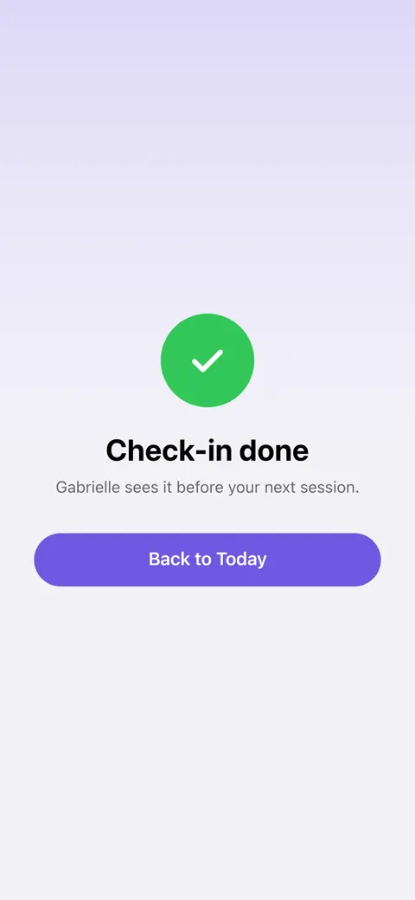
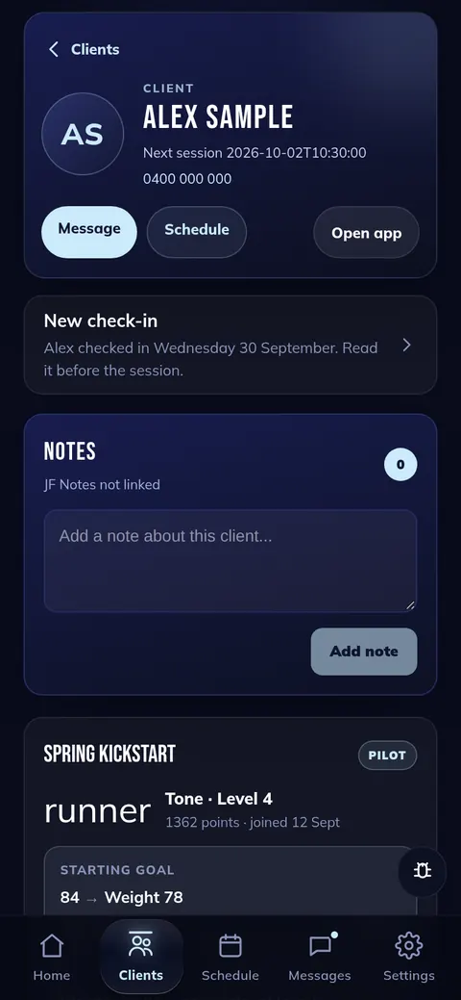

CK1
“It tells them their trainer sees it before their next session. Add a ping to trainers' iPads 5 minutes before that session.”
Clients with a trainer now read their trainer's name: "Gabrielle sees it before your next session." On the trainer's side the client shows "New check-in" until the trainer opens it, so nothing relies on remembering. The iPad ping 5 minutes before the session is built, and can run in a logging-only trial first.
Live; the 5-minute ping is switched off until you say

